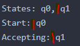
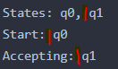
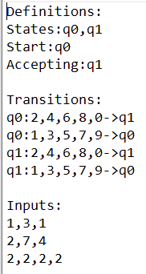

האם אני מניח שהשורות יגיעו בדיוק כמו שהן כתובות, כולל רווחים אחרי פסיקים ואחרי “כותרות” או שיכול להיות גם עם וגם בלי?
איפה שמסומן באדום:

תודה!

האם אני מניח שהשורות יגיעו בדיוק כמו שהן כתובות, כולל רווחים אחרי פסיקים ואחרי “כותרות” או שיכול להיות גם עם וגם בלי?
איפה שמסומן באדום:

תודה!
גם אני תהיתי על זה אבל אז ראיתי שבהסבר רשום שזה מופרד בפסיקים
ולא מצויין על רווחים. זה כנראה קשור באיך שהמערכת מציגה את הקוד שיהיה נוח לקרוא אותו. 
בדיוק מה שגרם לי לתהות, אז אצא מנקודת הנחה שאין רווחים
תודה!
האם ייתכן שיהיו כמה מקבלים ?
כן, רשום גם בהגדרה של התרגיל
כן זה מוגדר שיכולים להיות כמה מקבלים, רק אחד התחלתי מן הסתם
חושב שזה רלוונטי גם לגבי הרווחים אחרי הכותרות והנקודתיים באופן כללי?
אני התעלמתי מרווחים:
(לא התעלמתי מזה שיש שורה רווח בין החלקים של הטקסט)

תודה על התגובה המהירה, אלוף!
אני העתקתי את הטקסט שההם נתנו בתור דוגמה, אז כן התייחסתי לרווחים. בכל מקרה, לא נראלי שזה כזה משמעותי…
אשמח גם לדעת אם אפשר להניח שיש רווחים בדיוק כמו בדוגמאות. לפחות לפי המימוש הנוכחי שלי זה עובד לפי ההנחה הזאת ואחרת לא.
אפשר להניח שיש רק שורה רווח אחת בין כל פסקה?
לדעתי כן, כי זה מבנה הקובץ והוא מוגדר מראש לכל סוג של תוכן שלא יהיה בו.
מה שכן, יש כותרות עדיף לעבוד איתם לדעתי כי הם יהיו שם אם או בלי השורה רווח
האמת שלא הצלחתי להבין איך לעבוד עם הכותרות
כנראה בגלל זה אני תקועה בתרגיל… אפשר רמז איך לעבוד בעזרתן?
אם הייתי אומר לך למשל שבכל מחרוזת יש את המילה States: האם תדעי למצוא אותה עבור כל מחרוזת שאני לא אתן לך ?